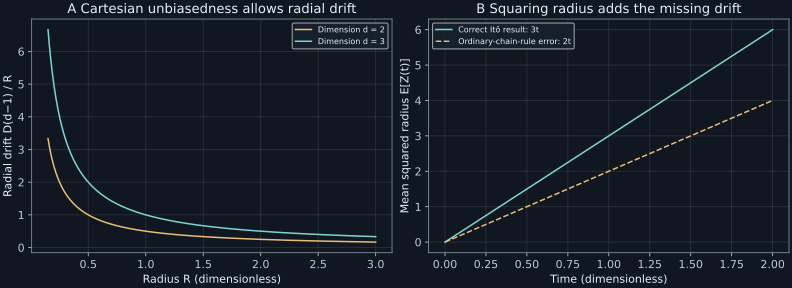

Chapter 13 · Lecture 16
Itô transformations, radial diffusion, and multiplicative noise
A microscope tracks three independent diffusing coordinates and reports their distance from the origin. There is no Cartesian force, yet the radius has an outward drift. Squaring a radial stochastic equation with the ordinary chain rule then predicts the wrong growth of mean squared distance. The task is to transform a noisy observable while preserving the probability law, including drift terms generated by unresolved fluctuations.
Based on NPTEL lecture 16: Itô/Fokker–Planck correspondence, radial and squared-radial diffusion, powers, exponential transformations, and geometric Brownian motion. General-rule explanation, singular-boundary qualifications, numerical tests, and worked exercises extend the recording. The financial connection is a model distinction rather than a price forecast.
13.1 A second-order term survives mesh refinement L16 0:50
Let $X_t$ solve the scalar Itô equation $dX_t=a(X_t,t)dt+b(X_t,t)dW_t$, where $W$ is a standard Wiener process. The drift $a$ has units of $X$ per time and the noise amplitude $b$ has units of $X$ per square root of time. Assume a nonexplosive adapted continuous solution, locally regular coefficients, and the local integrability needed by the displayed integrals. Adapted means that the coefficient used at a given time depends only on information available by that time. The Itô stochastic integral is defined through left-endpoint, nonanticipating sums and their probability limits.
Take a coordinate function $g(x,t)$ with one continuous time derivative and two continuous space derivatives. Its Taylor expansion contains $g_x\Delta X+g_t\Delta t+g_{xx}(\Delta X)^2/2$. Wiener increments are order $\sqrt{\Delta t}$ in mean square. Their squares accumulate to elapsed time by quadratic variation. Mixed products of $dt$ with $dW$ and squares of $dt$ vanish under refinement, while $(dW)^2$ contributes $dt$. These are rules for accumulated stochastic limits, not literal algebra on ordinary infinitesimals.
The Taylor sums have linear-in-noise term converging to $\int b g_xdW$, finite-variation terms converging to $\int(g_t+a g_x)dt$, and quadratic-noise term converging to $\int b^2g_{xx}dt/2$. On compact stopped ranges, continuity controls Taylor remainders by a vanishing modulus of continuity times bounded quadratic-variation sums. Localization removes that stopping under the assumed nonexplosion and integrability. This gives the mechanism and proof framework; the construction of the stochastic integral and weighted quadratic-variation limit is the underlying theorem. A precise Brownian version and proof are given in Mörters–Peres, Theorems 7.12–7.14, printed pages 196–198. ∎
For $dX=\sqrt{2D}dW$ with $D\gt0$ and $g(x)=x^2$, the rule gives $d(X^2)=2X\sqrt{2D}dW+2Ddt$. The second derivative term generates the positive mean-square growth. Discarding it would predict a zero mean square from zero initial position, despite the exact Gaussian variance $2Dt$.
The corresponding forward equation is $\partial_t\rho=-\partial_x(a\rho)+\tfrac12\partial_x^2(b^2\rho)$. The entire product is differentiated when $b$ varies with position. A Stratonovich equation uses midpoint rather than left-endpoint sums and admits the ordinary chain rule, but its drift must be changed to represent the same process: $a_{\mathrm{It\hat o}}=a_{\mathrm{Strat}}+b\partial_xb/2$ for one smooth scalar noise. Changing the convention while retaining the same drift generally changes the law.
13.2 Radius has an entropic outward drift L16 5:06
Let $d$ be a positive integer and let the position vector $\boldsymbol X_t$ have independent coordinates $dX_{i,t}=\sqrt{2D}dW_{i,t}$ for $i=1,\ldots,d$, with independent standard Wiener processes. Define radius $R_t=(\sum_iX_{i,t}^2)^{1/2}$. Away from $R=0$, the derivatives of the radius are $\partial_iR=X_i/R$ and $\partial_i^2R=1/R-X_i^2/R^3$. Summing the second derivatives gives the Laplacian $\nabla^2R=(d-1)/R$.
The multidimensional Itô rule gives drift $D\nabla^2R=D(d-1)/R$ and noise $\sqrt{2D}\sum_i(X_i/R)dW_i$. Define this projected integral through zero by taking the direction with components $H_i=X_i/R$ when $R$ is positive and any fixed unit vector when $R=0$. The bounded unit-length integrand makes it a continuous square-integrable martingale: an adapted process whose conditional expected future value, given its past information, equals its current value. It starts at zero and has quadratic variation $\int\sum_iH_i^2\,dt=t$ after this unit-vector completion. The quoted Lévy characterization says that a continuous martingale starting at zero with quadratic variation $t$ is a standard Wiener process; see Bingham, Lecture23, printed p.3, Lévy theorem. It therefore identifies this driver as $B$. The radius equation itself is still asserted only away from zero. Equivalently, its generator acting on a smooth radial test function is $D[\partial_R^2+(d-1)\partial_R/R]$, which gives the same local drift and diffusion. ∎
The radial drift reflects geometry, not a physical force doing extra work. More displacement directions increase radius than decrease it; angular degrees of freedom are discarded when radius alone is reported. For $D=0.5$ and $d=3$, the drift is $1/R$. It grows near the coordinate singularity, where a naive Euler step is especially unreliable. Figure 13.1 compares dimensions two and three.
For an origin-started vector, the Cartesian density is $(4\pi Dt)^{-d/2}e^{-R^2/(4Dt)}$ per unit $d$-dimensional volume. The radial density per unit radius is instead
$$\rho_R(r,t)=\frac{2\pi^{d/2}}{\Gamma(d/2)}r^{d-1}(4\pi Dt)^{-d/2}e^{-r^2/(4Dt)},\qquad r\gt0.\tag{13.3}$$The prefactor before $r^{d-1}$ is the surface area of the unit sphere in $d$ dimensions; $\Gamma$ is Euler's gamma function. This integrates angular volume and exposes the extra outward multiplicity. Substitution $z=r^2/(4Dt)$ reduces normalization to the gamma integral. In two dimensions (13.3) is the Rayleigh density $r e^{-r^2/(4Dt)}/(2Dt)$. It vanishes at the origin although the Cartesian density is maximal there. The density's reference measure matters.
The radius equation is singular at zero. The coordinate construction defines its physical nonnegative version without arbitrary boundary choices. In $d=1$, $R=|X|$ reflects at zero; simply deleting the $(d-1)/R$ drift does not give an unconstrained Brownian radius. Tanaka's formula adds local time: $d|X|=\operatorname{sign}(X)\sqrt{2D}dW+dL^0_X$, in the convention $|X_t|=|X_0|+\int_0^t\operatorname{sign}(X_s)dX_s+L^0_X(t)$. The general nonsmooth rule is cited in Theorem 7.33, printed page 210. Local time is the boundary accumulation term, not ordinary duration at zero.
13.3 Squared radius removes the coordinate denominator L16 18:20
Define $Z_t=R_t^2=\sum_iX_{i,t}^2$. This smooth Cartesian observable can be handled even when radius itself is singular. Applying the square rule to each coordinate and adding gives deterministic drift $2dDdt$ and noise $2\sqrt{2D}\sum_iX_i dW_i$. The latter has quadratic variation $8DZ_tdt$. Thus the nonnegative squared-radius process satisfies
$$dZ_t=2dDdt+\sqrt{8DZ_t}\,dB_t.\tag{13.4}$$A projected Wiener driver can be completed through zero using the Cartesian construction. Its sign or orientation need not be the same driver as the original coordinates. For $d\geq2$ and away from zero, applying Itô directly to $R^2$ gives $2R\,dR+(dR)^2$. The first term contributes $2D(d-1)dt$ and the second contributes $2Ddt$. Their sum is $2dDdt$. Ordinary-chain-rule multiplication omits precisely the final $2D$ term.
Taking expectations of the Cartesian squares avoids integrability ambiguities in the singular radius equation: for deterministic origin start, $\mathbb E[Z_t]=2dDt$. Since independent Gaussian squares each have variance $2(2Dt)^2$, $\operatorname{Var}(Z_t)=8dD^2t^2$. The law is $Z_t/(2Dt)$ equal in distribution to chi-square with $d$ degrees of freedom, the sum of $d$ independent standard Gaussian squares. At $D=0.5,d=3,t=1$, mean squared radius is three and its variance is six, both checked numerically.
To state standard names without a scale ambiguity, $R_t/\sqrt{2D}$ is the dimension-$d$ Bessel process built from standard coordinate Brownian motion, and $Z_t/(2D)$ is squared Bessel with drift $d$ and noise amplitude $2\sqrt{Z/(2D)}$ in its own variable. Naming a process without its diffusion normalization can hide a factor of two. The forward equation for density of $Z$ is $\partial_t\rho_Z=-2dD\partial_z\rho_Z+4D\partial_z^2(z\rho_Z)$, on a nonnegative domain with boundary behavior inherited from the coordinate process.

13.4 Powers and exponentials test the rule L16 33:57
For $dX=\sqrt{2D}dW$ and a positive integer power $n$, (13.1) gives $d(X^n)=Dn(n-1)X^{n-2}dt+n\sqrt{2D}X^{n-1}dW$. At $n=1$ the drift vanishes; at $n=2$ it is $2D$. The drift couples the nth moment to the $(n-2)$th moment after averaging, provided the stochastic integral is integrable. Starting at zero, this recursion produces the familiar even Gaussian moments and vanishing odd moments. The stochastic equation for a transformed observable need not close solely in that observable when the transformation discards relevant information; inverse branches and symmetry must be examined.
Let $\ell\gt0$ be a length scale and set $Y=e^{X/\ell}$ so its exponent is dimensionless. Its derivatives are $g_x=Y/\ell$ and $g_{xx}=Y/\ell^2$. Hence $dY=(D/\ell^2)Ydt+(\sqrt{2D}/\ell)YdW$. An unbiased Cartesian position produces a positively drifting exponential observable. This is a transformation effect: the exponential's convexity weights positive excursions more strongly than negative ones, not an added force on the particle.
The inverse transformation is single-valued for $Y\gt0$. Starting from a Cartesian density $\rho_X$, its density is $\rho_Y(y)=\ell\rho_X(\ell\log y)/y$. The factor $1/y$ is the Jacobian. In contrast, transforming $X$ to $X^2$ needs both preimages $\pm\sqrt z$, as already established in chapter 2. Itô calculus and density transformation give compatible laws when the support and branches are handled consistently.
13.5 Multiplicative motion remains positive L16 43:19
Let $S_t$ be a positive quantity of specified units, with constant fractional drift $a_S$ in inverse time and fractional noise amplitude $b_S$ in inverse square root of time. Given $S_0\gt0$, consider $dS_t=a_SS_tdt+b_SS_tdW_t$. Applying (13.1) to the dimensionless logarithm $\log(S_t/S_0)$ gives drift $a_S-b_S^2/2$ and noise amplitude $b_S$. Integrating and exponentiating yields
The logarithmic derivation gives the candidate, and direct Itô differentiation of the exponential verifies its original drift and noise, including the cancellation of the half-variance correction. A continuous Wiener path is finite on compact intervals, so the exponential is strictly positive there. Finally $W_t$ is Gaussian of variance $t$, so $\mathbb E[e^{b_SW_t}]=e^{b_S^2t/2}$; multiplication by the deterministic factor gives the stated mean. ∎
The median is $S_0e^{(a_S-b_S^2/2)t}$, while variance is $S_0^2e^{2a_St}(e^{b_S^2t}-1)$. A growing mean can coexist with a falling median because rare large realizations dominate the average. At dimensionless $S_0=t=1$, $a_S=0.1$, and $b_S=1.2$, mean is 1.10517092 and median 0.53794444. Interpreting a single typical trajectory as the ensemble expectation fails even in this elementary model.
An exact logarithmic step is multiplication by $\exp[(a_S-b_S^2/2)h+b_S\sqrt h\,Z]$ with unit Gaussian $Z$. Euler multiplication by $1+a_Sh+b_S\sqrt h\,Z$ can be negative. For the same parameters and $h=1$, that probability is 0.17965867, computed from the Gaussian lower tail. The numerical discretization has broken a structural property of the exact process, even though its one-step expected value is reasonable.
13.6 A price-process assumption is not an option-pricing theory L16 43:43
A positive asset-price model can use (13.5), but transforming a Wiener process supplies no rule for valuing a contingent payoff. Black and Scholes add a traded riskless asset, continuous hedging, and market assumptions to derive a pricing equation. Their original paper, printed pages 640–642, explicitly assumes constant interest and fractional variance rates, no dividends, frictionless trading, borrowing, and short selling. Itô's rule supplies the payoff's stochastic differential; the hedged-portfolio argument supplies the pricing constraint. A forward probability equation with a real-world drift is a different object from that pricing equation. This distinction limits what the mathematical transformation establishes and prevents treating a tractable price law as an empirically validated market model.
13.7 Laboratory: preserve transformed moments
The laboratory makes three independent checks. First it uses the exact finite-sum identity $X_n^2-X_0^2=2\sum_jX_j\Delta X_j+\sum_j(\Delta X_j)^2$, so the missing chain-rule term is visible on each sampled path. Second it constructs radial motion directly from independent Gaussian coordinates and compares squared-radius mean and variance with their exact values. Third it checks geometric Brownian mean by Gaussian quadrature and Monte Carlo and measures the negative-value defect of one-step Euler.
Run python code/ch13_transform.py. It uses seed 2026110813 and 100,000 samples, makes no network calls, and writes JSON and text output beside the source. It intentionally avoids Euler simulation of the singular radial equation. Cartesian sampling preserves its nonnegative radius and correct origin behavior automatically.
Mean squared-increment correction: 0.99925612
dimension sample mean R² exact mean R²
1 1.00103222 1.00000000
2 2.00075036 2.00000000
3 3.00118606 3.00000000
GBM exact mean=1.10517092, median=0.53794444
One-step Euler negative probability=0.17965867
import numpy as np
def geometric_step(s, h, drift, noise, normal):
if np.any(np.asarray(s) <= 0) or h < 0:
raise ValueError("positive s and nonnegative h required")
return s*np.exp((drift-noise**2/2)*h + noise*np.sqrt(h)*normal)The caller supplies standard-normal draws and positive initial values. The function returns the exact constant-coefficient step and writes no files. At extreme exponents, floating-point overflow or underflow remains possible; mathematical positivity does not guarantee representable machine values. Storing logarithms is appropriate when that range matters.
13.8 Transformations do not remove boundary and state questions
Itô's correction is determined by noise covariance and coordinate curvature. It does not create extra energy or select an interpretation without a specified integral convention. Radius, squared radius, and exponential coordinates inherit the original probability law only when inverse branches and boundary conditions are retained. Smooth invertible transformations preserve a Markov state; a many-to-one observation needs an additional closure argument. Radial Brownian symmetry supplies one here, while a general projection need not.
At zero radius the smooth formula is local and requires its coordinate construction or boundary extension. At zero multiplicative state the positive-logarithm transform is unavailable; the positive-initial exact solution never reaches zero at finite time. The same notation can therefore describe different boundary problems unless initial support and admissible extensions are stated.
13.9 Exercises with worked solutions
Exercise 13.1 — Outward drift without a force (conceptual)
Does positive radial drift imply positive mean Cartesian displacement or extra kinetic-energy injection?
Worked solution
No. Each Cartesian increment remains centered and its origin-started mean is zero. Radius discards direction and is nonlinear, so opposite Cartesian displacements do not cancel in radius. The $D(d-1)/R$ drift represents angular multiplicity in this reduced observable. Its squared-radius growth $2dDt$ is exactly the sum of Cartesian variances, with no additional source. A physical potential would enter the Cartesian drift separately.
Exercise 13.2 — Radius in one dimension (conceptual)
Why is $dR=\sqrt{2D}dB$ an incomplete global equation for $R=|X|$?
Worked solution
Unconstrained Brownian motion crosses below zero, whereas a radius cannot. The derivative of $|x|$ is nonsmooth at zero, so the smooth Itô formula used away from zero does not cover returns to that point. Tanaka's local-time term supplies reflection in the coordinate construction. The squared radius avoids this derivative singularity and obeys (13.4) with $d=1$, drift $2D$, and noise amplitude $\sqrt{8DZ}$. Dropping a singular term locally does not determine a global boundary behavior.
Exercise 13.3 — A fourth moment from Itô (derive)
For origin-started $dX=\sqrt{2D}dW$, derive $\mathbb E[X_t^4]$ without assuming its Gaussian fourth moment in advance.
Worked solution
At $n=4$, the power rule gives $d(X^4)=12DX^2dt+4\sqrt{2D}X^3dW$. Its stochastic integral has zero mean under the finite Gaussian moments of this process. Since the square rule gives $\mathbb E[X_s^2]=2Ds$, integrate $d\mathbb E[X_t^4]/dt=24D^2t$ from zero to obtain $12D^2t^2$. This equals three times the squared variance $(2Dt)^2$, independently confirming the Gaussian fourth-moment relation through moment dynamics.
Exercise 13.4 — Recover squared-radius variance from its generator (derive)
Use (13.4) to derive the second moment of $Z$ and its variance.
Worked solution
Apply the square rule again: $d(Z^2)=[4dDZ+8DZ]dt+2Z\sqrt{8DZ}dB$. Thus $d\mathbb E[Z^2]/dt=4D(d+2)\mathbb E[Z]=8d(d+2)D^2t$. Origin start gives $\mathbb E[Z^2]=4d(d+2)D^2t^2$. Subtracting $(2dDt)^2$ leaves $8dD^2t^2$. The independent-coordinate calculation in the laboratory supplies a different check of both drift and noise normalization.
Exercise 13.5 — Diagnose the missing squared-increment term (compute/design)
For a sampled path with $D=0.5$ on a unit interval, compare the ordinary chain sum with the actual squared endpoint.
Worked solution
Compute $2\sum X_j\Delta X_j$ at left endpoints and subtract it from $X_n^2-X_0^2$. The difference is exactly $\sum(\Delta X_j)^2$, up to rounding. Its expected value is one at every deterministic mesh resolution, and its variance is $2/n$. The lab gives ensemble mean 0.99925612 for 128 cells. Refinement reduces its scatter but does not remove its mean. An implementation that hopes the omitted term vanishes under smaller steps converges to the wrong transformation.
Exercise 13.6 — Which growth does a typical path show? (compute/design)
For $a_S=0.1,b_S=1.2,S_0=1$, compare expected and median values after unit time and explain a suitable simulation check.
Worked solution
The log process has mean $0.1-1.44/2=-0.62$ and variance 1.44. Exponentiating its median gives $e^{-0.62}=0.53794444$, while averaging the lognormal law gives $e^{0.1}=1.10517092$. A finite ensemble may estimate the mean noisily because of the upper tail; use its exact variance $e^{0.2}(e^{1.44}-1)$ to assess the standard error. Compare log mean and variance as well as positivity, because checking the raw mean alone can hide discretization errors. One-step Euler's negative probability 0.17965867 is already a decisive structural failure at this large step.
13.10 Sources and attribution
- V. Balakrishnan, NPTEL lecture 16, course 115106089.
- P. Mörters and Y. Peres, Brownian Motion, author-hosted manuscript, Theorems 7.12–7.14, printed pages 196–198, and Theorem 7.33, page 210: stochastic-limit and nonsmooth-boundary foundations.
- F. Black and M. Scholes, The Pricing of Options and Corporate Liabilities, Journal of Political Economy 81, 637–654 (1973), printed pages 640–642, verified in the linked primary-paper scan in Section 13.6. Used only to distinguish price dynamics from pricing assumptions.